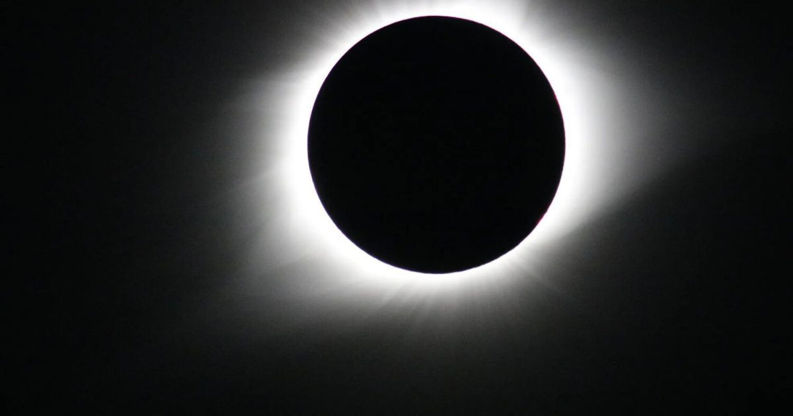

2 октября 480 г. до н.э.: Затмение вызывает отступление
Древнее солнечное затмение изменило ход военного конфликта, когда оно бросило тень на битву за Коринф между спартанцами, которыми командовал Клеомброт, и вторгшимися персами во главе с Ксерксом I.
Геродот писал, что «в то время как Клеомброт приносил жертву, чтобы знать, должен ли он идти против персов, Солнце Продолжить чтение " 2 октября 480 г.
до н.э.: Затмение вызывает отступление"Сообщение 2 октября 480 г.
до н.э.: Затмение вызывает отступление